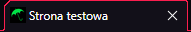
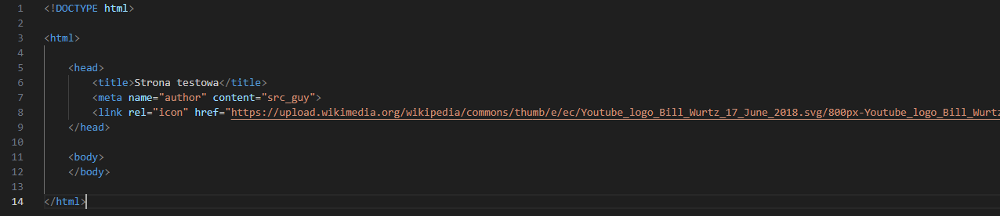
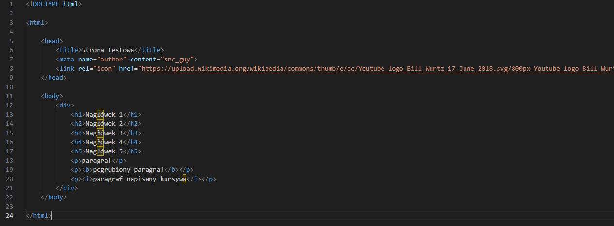
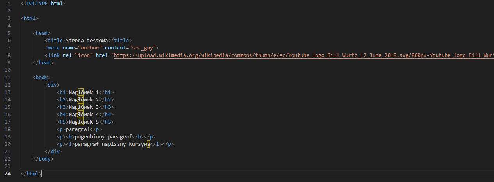
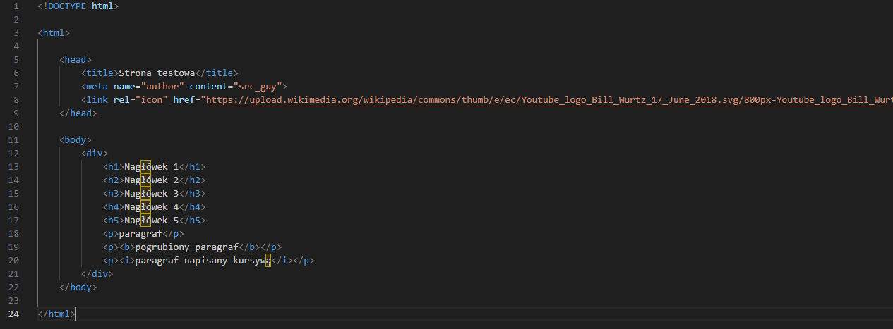

Strony w HTML'u buduje się głównie ze znaczników. Znaczniki to polecenia wysyłane do przeglądarki, które są później interpretowane i wyświetlane użytkownikowi. Znaczniki składają się z dwóch części: znacznika otwierającego (np. < p >) i zamykającego (np. < /p >).
Moim zdaniem, w HTML'u mamy 3 podstawowe znaczniki: < html >, < head >, < body >.
Znacznik < html > odpowiada za całą stronę WWW. Pomiędzy znacznikiem otwierającym i zamykającym znajduje się cała strona.
Znacznik < head > odpowiada za niewidoczną część strony. W sekcji < head > znajdują się między informacje o tytule, autorze lub słowach kluczowych.
Znacznik < body > odpowiada za widoczną dla użytkownika cześć strony. W sekcji < body > umieszczamy treść całej strony.
Najpopularniejszymi znacznikami w sekcji < head > są m. in. znaczniki:
< title > - znacznik odpowiadający za tytuł
< meta > - przechowuje informacje o stronie
< link > - wykorzystywany do dołączania zewnętrznych plików
Najlepszym przykładem będzie praktyczne wykorzystanie powyższych znaczników


Tak jak widzimy, wszystkie znaczniki zostały zaprezentowane. Więcej o tych znacznikach przeczytacie w podręczniku.
Teraz przejdę do sekcji < body >. Tutaj mamy już bardzo dużą ilość znaczników. Ale myślę, że możemy wyróżnić najważniejsze:
< h1 > - największy nagłówek
< p > - paragraf
< b > - pogrubienie tekstu
< i > - kursywa
< div > - blok znaczników
Bez owijania w bawełne, przejdę do przykładu.

Tak jak widzimy, użycie każdego z podanych znaczników przyniosło oczekiwany efekt. O innych znacznikach napiszę w kolejnych notatkach, które prawdopodobnie ukarzą się po następnej lekcji w szkole.
Nie będę się dalej rozpisywał na ten temat. Programowania nie uczy się z książek, a z własnych projektów, prób i błędów, nowych stron i nowych aplikacji które się tworzy. Tym samym zachęcam Cię czytelniku do zbudowania swojej własnej strony internetowej 😊
Masz jakieś pytania lub notatki które chcesz zamieścić? Napisz na discordzie!
 
